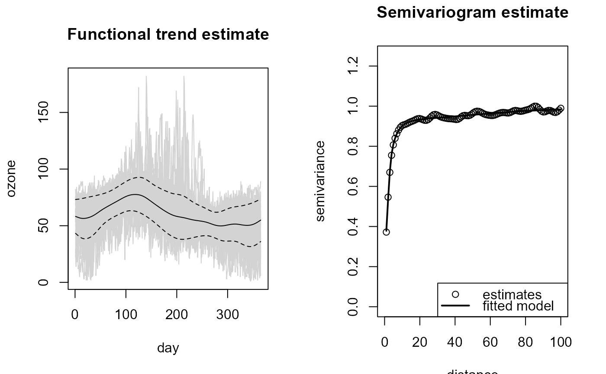

Fits a nonparametric functional model
(jointly estimates the trend, the variance and the variogram) by calling
locpol.npf.bin, np.var.npf.bin.res2, np.svar.npf.locpol and
npsp::fitsvar.sb.iso iteratively.
At each iteration, the trend and variance estimation bandwidths are updated
by calling h.cv.
npf.fit(x, ...)
# S3 method for default
npf.fit(
x,
iter = 2,
tol = 0.1,
h = NULL,
var.h = NULL,
svar.h = NULL,
maxlag = NULL,
nlags,
dk = 0,
verbose = FALSE,
...
)
# S3 method for npf.model
npf.fit(
x,
iter = 1,
tol = 0.1,
svar.h = x$svm$esv$locpol$h,
dk = x$svm$par$dk,
verbose = FALSE,
...
)a (data) object used to select a method.
further arguments passed to h.cv.npf.bin
(trend bandwidth selection parameters).
maximum number of iterations.
relative convergence tolerance (trend and variance bandwidths).
initial bandwidth for trend estimation
(final bandwidth if iter = 0).
initial bandwidth for variance estimation
(final bandwidth if iter = 0).
bandwidth for variogram estimation.
maximum lag and number of lags in variogram estimation
(only one must be specified; see np.svar.npf.locpol).
dimension of the Shapiro-Botha variogram model (see npsp::fitsvar.sb.iso).
logical; if TRUE, the errors (the relative differences
in trend and variance bandwidth selections) at each iteration are printed.
Returns an object of class npf.model
(extending npf.locpol), the lp argument with the others as additional
components, and an additional component convergence with the number of iterations and
the relative differences in trend and variance bandwidth selections.
fd <- npf.data(ozone, dimnames = "day")
fit <- npf.fit(fd, maxlag = 100, var.h = 30, verbose = TRUE)
#>
#> Iteration: 0
#> Trend bandwidth: 9.894684
#> Variance bandwidth: 30
#> Semivariogram bandwidth: 3.712871
#>
#> Iteration: 1
#> Trend bandwidth: 36.07592 , Error: 0.7257261
#> Variance bandwidth: 32.84395 , Error: 0.08658973
#>
#> Iteration: 2
#> Trend bandwidth: 36.07668 , Error: 2.090298e-05
#> Variance bandwidth: 33.10639 , Error: 0.007927349
plot(fit)
